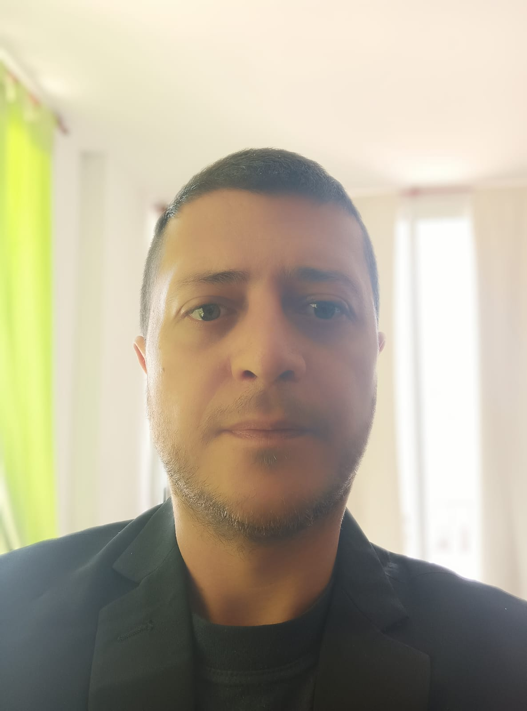

Nombre: Gustavo Alberto Loza
Edad: 43 años
Ocupacion: Electrisista, Haking Etico
Correo:gustavlozza@yahoo.com
¿Por que estoy haciendo el curso?
"Decidí embarcarme en un curso de programación web y hacking ético como electricista por varias razones apasionantes. En primer lugar, la creciente interconexión de dispositivos y sistemas en el mundo moderno ha despertado mi interés en comprender cómo funcionan las tecnologías subyacentes. Como electricista, siempre estoy atento a las últimas innovaciones en el campo, y aprender programación web me permite entender mejor cómo interactúan los sistemas eléctricos con la tecnología.
Además, el hacking ético es una habilidad crucial en la era digital actual. La ciberseguridad es una preocupación constante, y estoy comprometido a garantizar que los sistemas estén protegidos contra amenazas potenciales. Al comprender los principios del hacking ético, puedo contribuir de manera más efectiva a la seguridad de las redes eléctricas y otros sistemas críticos.
En última instancia, estoy motivado por la oportunidad de ampliar mis habilidades y conocimientos, creando un puente entre mi experiencia como electricista y el mundo digital. Creo que esta combinación única de habilidades me permitirá abordar desafíos emergentes y encontrar soluciones innovadoras en el campo de la tecnología y la ciberseguridad."